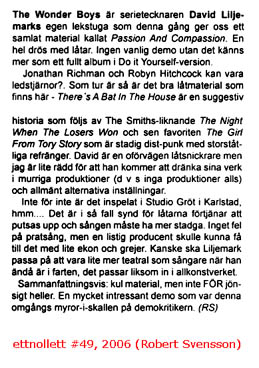

The Wonder Boys
news

rough translation:
The Wonder Boys is comics artist David Liljemark’s own
play house which this time gives us a collected material called Passion
And Compassion. A whole bunch of songs. No ordinarty demo, it feels instead
like a full album in the “do it yourself” vein.
Jonathan Richman and Robyn Hitchcock might be guiding stars?.
Luckily it’s good song material available here – There’s
A Bat In The House is a suggestive story, followed by The Smiths-sounding
The Night When The Losers Won, and then the favourite The Girl
From Tory Story which is steady distortion-punk with grand choruses. David
is an un-shy songsmith, but I’m a bit afraid that he will drown his works
in gloomy productions (that is, no productions at all) and generally alternative
settings/attitudes.
After all, it is recorded in Studio Gröt [=Porridge]
in Karlstad, hmm... If so, it’s a shame, because the songs deserve to
get polished and the vocals need to have more consistency. Nothing wrong with
spoken vocals, but an artful producer might make it happen with some echoes
and stuff. Maybe Liljemark should take the opportunity to be a bit more theatrical
as a singer while he’s at it, it fits with the artwork as a whole, so
to say.
To sum up: fun material, but not TOO goofy either. A very
interesting demo, which was this round’s ants-in-the-head for the demo
reviewer. (RS)